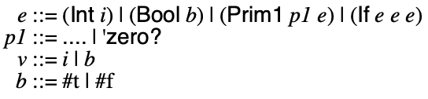
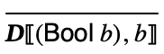
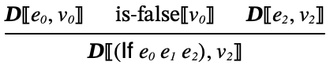
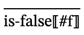
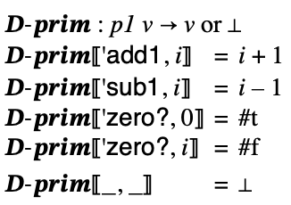

7 Dupe: a duplicity of types
There are 10 types of values...
7.1 Integers and Booleans
Up until now we have worked to maintain a single type of values: integers. This led to some awkwardness in the design of conditionals. Let us lift this restriction by considering a multiplicity of types. To start, we will consider two: integers and booleans.
We’ll call it Dupe.
We will use the following syntax, which relaxes the syntax of Con to make '(zero? e) its own expression form and conditionals can now have arbitrary expressions in test position: (if e0 e1 e2) instead of just (if (zero? e0) e1 e2). We also add syntax for boolean literals.
Together this leads to the following grammar for concrete Dupe.

And abstract Dupe:

One thing to take note of is the new nonterminal v which ranges over values, which are integers and booleans.
Abstract syntax is modelled with the following datatype definition:
#lang racket (provide Int Bool Prim1 If) ;; type Expr = ;; | (Int Integer) ;; | (Bool Boolean) ;; | (Prim1 Op Expr) ;; | (If Expr Expr Expr) ;; type Op = 'add1 | 'sub1 | 'zero? (struct Int (i) #:prefab) (struct Bool (b) #:prefab) (struct Prim1 (p e) #:prefab) (struct If (e1 e2 e3) #:prefab)
The s-expression parser is defined as follows:
#lang racket (provide parse) (require "ast.rkt") ;; S-Expr -> Expr (define (parse s) (match s [(? integer?) (Int s)] [(? boolean?) (Bool s)] [(list (? op1? o) e) (Prim1 o (parse e))] [(list 'if e1 e2 e3) (If (parse e1) (parse e2) (parse e3))] [_ (error "Parse error")])) ;; Any -> Boolean (define (op1? x) (memq x '(add1 sub1 zero?)))
7.2 Meaning of Dupe programs
To consider he meaning of Dupe programs, we must revisit the meaning of conditions. Previously we branched on whether a subexpression evaluated to 0. We will now consider whether the subexpression evaluates to #f.
Let’s consider some examples:
(if #f 1 2) means 2 since the test expression means #f.
(if #t 1 2) means 1 since the test expression means #t, which is not #f.
Just as in Racket (and Scheme, generally), we will treat any non-#f value as “true.” So:
(if 0 1 2) means 1 since the test expression means 0, which is not #f.
(if 7 1 2) means 1 since the test expression means 7, which is not #f.
The new (zero? e) expression form evaluates to a boolean: #t when e evaluates to 0 and #f to an integer other than 0.
The #t and #f literals mean themselves, just like integer literals.
Once a multiplicity of types are introduced, we are forced to come to grips with type mismatches. For example, what should (add1 #f) mean?
Languages adopt several approaches:
Prohibit such programs statically with a type system (e.g. OCaml, Java)
Coerce values to different types (e.g. JavaScript)
Signal a run-time error (e.g. Racket)
Leave the behavior unspecified (e.g. Scheme, C)
We are going to start by taking the last approach. Later we can reconsider the design, but for now this is a simple approach.
The semantics is still a binary relation between expressions and their meaning, however the type of the relation is changed to reflect the values of Dupe, which may either be integers or booleans:



This relies on two helper judgments:



Notice that here we are following the semantics of Racket, which says that anything that is not #f counts as true in a conditional.
This semantics has also been refactored slightly so that there is a single rule for the Prim1 case. The new rule essentially defers the work to a new metafunction, 𝑫-𝒑𝒓𝒊𝒎:

Returning to the issue of type mismatches, what does the semantics say about (Prim1 'add1 (Bool #f))?
What it says is: nothing. These programs are simply not in the semantic relation for this language. There’s only one rule for giving meaning to an (Prim1 'add1 e0) expression and it’s premise is that e means some integer i0. But ((Bool #f), i) ∉ 𝑫 for any i. So there’s no value v such that ((Prim1 'add1 (Bool #f)), v) ∈ 𝑫. This expression is undefined according to the semantics.
The interpreter follows the rules of the semantics closely and is straightforward:
#lang racket (provide interp) (require "ast.rkt" "interp-prim.rkt") ;; type Value = ;; | Integer ;; | Boolean ;; Expr -> Value (define (interp e) (match e [(Int i) i] [(Bool b) b] [(Prim1 p e) (interp-prim1 p (interp e))] [(If e1 e2 e3) (if (interp e1) (interp e2) (interp e3))]))
And the interpretation of primitives closely matches 𝑫-𝒑𝒓𝒊𝒎:
#lang racket (provide interp-prim1) ;; Op Value -> Value (define (interp-prim1 op v) (match op ['add1 (add1 v)] ['sub1 (sub1 v)] ['zero? (zero? v)]))
We can confirm the interpreter computes the right result for the examples given earlier:
Examples
> (interp (Bool #t)) #t
> (interp (Bool #f)) #f
> (interp (If (Bool #f) (Int 1) (Int 2))) 2
> (interp (If (Bool #t) (Int 1) (Int 2))) 1
> (interp (If (Int 0) (Int 1) (Int 2))) 1
> (interp (If (Int 7) (Int 1) (Int 2))) 1
> (interp (If (Prim1 'zero? (Int 7)) (Int 1) (Int 2))) 2
Correctness follows the same pattern as before, although it is worth keeping in mind the “hypothetical” form of the statement: if the expression has some meaning, then the interpreter must produce it. In cases where the semantics of the expression is undefined, the interpreter can do whatever it pleases; there is no specification.
Interpreter Correctness: For all Dupe expressions
e and values v, if (e,v) in
 , then (interp e) equals
v.
, then (interp e) equals
v.
Consider what happens with interp on undefined programs such as (add1 #f): the interpretation of this expression is just the application of the Racket add1 function to #f, which results in the interp program crashing and Racket signalling an error:
Examples
> (interp (Prim1 'add1 (Bool #f))) add1: contract violation
expected: number?
given: #f
This isn’t a concern for correctness, because the interpreter is free to crash (or do anything else) on undefined programs; it’s not in disagreement with the semantics, because there is no semantics.
From a pragmatic point of view, this is a concern because it complicates testing. If the interpreter is correct and every expression has a meaning (as in all of our previous languages), it follows that the interpreter can’t crash on any Expr input. That makes testing easy: think of an expression, run the interpreter to compute its meaning. But now the interpreter may break if the expression is undefined. We can only safely run the interpreter on expressions that have a meaning.
We’ll return to this point in the design of later langauges.
7.3 Ex uno plures: Out of One, Many
Before getting in to the compiler, let’s first address the issue of representation of values in the setting of x86.
So far we’ve had a single type of value: integers. Luckily, x86 has a convenient datatype for representing integers: it has 64-bit signed integers. (There is of course the problem that this representation is inadequate; there are many (Con) integers we cannot represent as a 64-bit integer. But we put off worrying about this until later.)
The problem now is how to represent integers and booleans, which should be disjoint sets of values. Representing these things in the interpreter as Racket values was easy: we used booleans and integers. Representing this things in x86 will be more complicated. x86 doesn’t have a notion of “boolean” per se and it doesn’t have a notion of “disjoint” datatypes. There is only one data type and that is: bits.
We chose 64-bit integers to represent Con integers, because that’s the kind of value that can be stored in a register or used as an argument to a instruction. It’s the kind of thing that can be returned to the C run-time. It’s (more or less) the only kind of thing we have to work with. So had we started with booleans instead of integers, we still would have represented values as a sequence of bits because that’s all there is. Now that we have booleans and integers, we will have to represent both as bits (64-bit integers). The bits will have to encode both the value and the type of value.
As discussed in the lecture video, there are many possible ways of representing multiple types, this is just how we’ve decided to do it.
Here is the idea of how this could be done: We have two kinds of data: integers and booleans, so we could use one bit to indicate whether a value is a boolean or an integer. The remaining 63 bits can be used to represent the value itself, either true, false, or some integer.
Let’s use the least significant bit to indicate the type and let’s use #b0 for integer and #b1 for boolean. These are arbitrary choices (more or less).
The number 1 would be represented as #b10, which is the bits for the number (i.e. #b1), followed by the integer tag (#b0). Note that the representation of a Dupe number is no longer the number itself: the Dupe value 1 is represented by the number 2 (#b10). The Dupe value #t is represented by the number 1 (#b01); the Dupe value #f is represented by the number 3 (#b11).
One nice thing about our choice of encoding: 0 is represented as 0 (#b00).
If you wanted to determine if a 64-bit integer represented an integer or a boolean, you simply need to inquire about the value of the least significant bit. At a high-level, this just corresponds to asking if the number is even or odd. Odd numbers end in the bit (#b1), so they reprepresent booleans. Even numbers represent integers. Here are some functions to check our understanding of the encoding:
#lang racket (provide (all-defined-out)) ;; type Value = ;; | Integer ;; | Boolean ;; type Bits = Integer (define int-shift 1) (define type-int #b0) (define type-bool #b1) (define val-true #b01) (define val-false #b11) ;; Bits -> Value (define (bits->value b) (cond [(= type-int (bitwise-and b #b1)) (arithmetic-shift b (- int-shift))] [(= b val-true) #t] [(= b val-false) #f] [else (error "invalid bits")])) ;; Value -> Bits (define (value->bits v) (match v [(? integer?) (arithmetic-shift v int-shift)] [#t val-true] [#f val-false]))
Examples
> (bits->value 0) 0
> (bits->value 1) #t
> (bits->value 2) 1
> (bits->value 3) #f
> (bits->value 4) 2
> (bits->value 5) invalid bits
> (bits->value 6) 3
> (bits->value 7) invalid bits
Notice that not all bits represent a value; name any odd number that’s neither 1 (#f) or 3 (#t).
We can also write the inverse:
Examples
> (value->bits #t) 1
> (value->bits #f) 3
> (value->bits 0) 0
> (value->bits 1) 2
> (value->bits 2) 4
> (value->bits 3) 6
> (bits->value (value->bits #t)) #t
> (bits->value (value->bits #f)) #f
> (bits->value (value->bits 0)) 0
> (bits->value (value->bits 1)) 1
> (bits->value (value->bits 2)) 2
> (bits->value (value->bits 3)) 3
The interpreter operates at the level of Values. The compiler will have to work at the level of Bits. Of course, we could, as an intermediate step, define an interpreter that works on bits, which may help us think about how to implement the compiler.
; interp-bits : Expr -> Bits
; ∀ e : Expr . (interp-bits e) = (value->bits (interp e))
Let’s design interp-bits by derivation. This is a common functional programming technique whereby we start from a specification program and through a series of algebraic transformations, arrive an correct implementation.
First, let’s state the specification of interp-bits as a function that “cheats,” it uses interp to carry out evaluation and then finally converts to bits.
Examples
; Expr -> Bits
> (define (interp-bits e) (value->bits (interp e)))
It’s clearly correct with respect to the spec for interp-bits that we started with because the code is just the specification itself.
We can even do some property-based random testing (which obviously succeeds):
Examples
(define (interp-bits-correct e) (with-handlers ([exn:fail? (λ (x) 'ok)]) (interp e) (check-equal? (interp-bits e) (value->bits (interp e)))))
(define es (for/list ([i 100]) (random-expr))) (for-each interp-bits-correct es)
The one wrinkle is we really only need the spec to hold when e is defined according to the semantics. Since we know interp crashes (by raising an exception) whenever e is undefined, we use an exception handler to avoid testing when e is undefined.
Now let us inline the defintion of interp:
Examples
; Expr -> Bits
(define (interp-bits e) (value->bits (match e [(Int i) i] [(Bool b) b] [(Prim1 'add1 e0) (add1 (interp e0))] [(Prim1 'sub1 e0) (sub1 (interp e0))] [(Prim1 'zero? e0) (zero? (interp e0))] [(If e0 e1 e2) (if (interp e0) (interp e1) (interp e2))])))
Examples
> (for-each interp-bits-correct es)
So we get:
Examples
; Expr -> Bits
(define (interp-bits e) (match e [(Int i) (value->bits i)] [(Bool b) (value->bits b)] [(Prim1 'add1 e0) (value->bits (add1 (interp e0)))] [(Prim1 'sub1 e0) (value->bits (sub1 (interp e0)))] [(Prim1 'zero? e0) (value->bits (zero? (interp e0)))] [(If e0 e1 e2) (value->bits (if (interp e0) (interp e1) (interp e2)))]))
Examples
> (for-each interp-bits-correct es)
In the first two cases, we know that i and b are integers and booleans, respectively. So we know (values->bits i) = (* 2 i) and (values->bits b) = (if b 1 3). We can rewrite the code as:
Examples
; Expr -> Bits
(define (interp-bits e) (match e [(Int i) (* 2 i)] [(Bool b) (if b 1 3)] [(Prim1 'add1 e0) (value->bits (add1 (interp e0)))] [(Prim1 'sub1 e0) (value->bits (sub1 (interp e0)))] [(Prim1 'zero? e0) (value->bits (zero? (interp e0)))] [(If e0 e1 e2) (value->bits (if (interp e0) (interp e1) (interp e2)))]))
Examples
> (for-each interp-bits-correct es)
Examples
; Expr -> Bits
(define (interp-bits e) (match e [(Int i) (* 2 i)] [(Bool b) (if b 1 3)] [(Prim1 'add1 e0) (value->bits (add1 (interp e0)))] [(Prim1 'sub1 e0) (value->bits (sub1 (interp e0)))] [(Prim1 'zero? e0) (value->bits (zero? (interp e0)))] [(If e0 e1 e2) (if (interp e0) (value->bits (interp e1)) (value->bits (interp e2)))]))
Examples
> (for-each interp-bits-correct es)
Let’s now re-write by the following equations:
(add1 e) = (+ e 1) (sub1 e) = (- e 1) (f (+ e0 e1)) = (+ (f e0) (f e1)) (f (- e0 e1)) = (- (f e0) (f e1))
to get:
Examples
; Expr -> Bits
(define (interp-bits e) (match e [(Int i) (* 2 i)] [(Bool b) (if b 1 3)] [(Prim1 'add1 e0) (+ (value->bits (interp e0)) (value->bits 1))] [(Prim1 'sub1 e0) (- (value->bits (interp e0)) (value->bits 1))] [(Prim1 'zero? e0) (value->bits (zero? (interp e0)))] [(If e0 e1 e2) (if (interp e0) (value->bits (interp e1)) (value->bits (interp e2)))]))
Examples
> (for-each interp-bits-correct es)
By computation, (value->bits 1) = 2.
We can now rewrite by the equation of our specification:
(value->bits (interp e)) = (interp-bits e)
Examples
; Expr -> Bits
(define (interp-bits e) (match e [(Int i) (* 2 i)] [(Bool b) (if b 1 3)] [(Prim1 'add1 e0) (+ (interp-bits e0) 2)] [(Prim1 'sub1 e0) (- (interp-bits e0) 2)] [(Prim1 'zero? e0) (value->bits (zero? (interp e0)))] [(If e0 e1 e2) (if (interp e0) (interp-bits e1) (interp-bits e2))]))
Examples
> (for-each interp-bits-correct es)
Examples
; Expr -> Bits
(define (interp-bits e) (match e [(Int i) (* 2 i)] [(Bool b) (if b 1 3)] [(Prim1 'add1 e0) (+ (interp-bits e0) 2)] [(Prim1 'sub1 e0) (- (interp-bits e0) 2)] [(Prim1 'zero? e0) (match (zero? (interp-bits e0)) [#t 1] [#f 3])] [(If e0 e1 e2) (if (interp e0) (interp-bits e1) (interp-bits e2))]))
Examples
> (for-each interp-bits-correct es)
Finally, in the last case, all that matters in (if (interp e0) ...) is whether (interp e0) returns #f or something else. So we can rewrite in terms of whether (interp-bits e0) produces the representation of #f (#b11):
Examples
; Expr -> Bits
(define (interp-bits e) (match e [(Int i) (* 2 i)] [(Bool b) (if b 1 3)] [(Prim1 'add1 e0) (+ (interp-bits e0) 2)] [(Prim1 'sub1 e0) (- (interp-bits e0) 2)] [(Prim1 'zero? e0) (match (zero? (interp-bits e0)) [#t 1] [#f 3])] [(If e0 e1 e2) (if (= (interp-bits e0) 3) (interp-bits e2) (interp-bits e1))]))
Examples
> (for-each interp-bits-correct es)
Note that whenever bs are bits representing an integer, then (value->bits (add1 (bits->value bs))) is equal to (+ bs 2), i.e. adding #b10. When bs represents a boolean, then (value->bits (add1 (bits->value bs))) would crash, while (+ bs (value->bits 1)) doesn’t, but this is an undefined program, so changing the behavior is fine.
Looking back: starting from the spec, we’ve arrived at a definition of interp-bits that is completely self-contained: it doesn’t use interp at all. It also only uses the Bits representation and does no conversions to or from Values.
We can recover the original interpreter by wrapping the bit interpreter in a final conversion:
Examples
; Expr -> Value
> (define (interp.v2 e) (bits->value (interp-bits e))) > (interp.v2 (Bool #t)) #t
> (interp.v2 (Bool #f)) #f
> (interp.v2 (parse '(if #f 1 2))) 2
> (interp.v2 (parse '(if #t 1 2))) 1
> (interp.v2 (parse '(if 0 1 2))) 1
> (interp.v2 (parse '(if 7 1 2))) 1
> (interp.v2 (parse '(if (zero? 7) 1 2))) 2
> (interp.v2 (parse '(add1 #f))) invalid bits
> (interp.v2 (parse '(add1 #t))) #f
Notice the last two examples. What’s going on?
The interp.v2 function is also a correct interpreter for Dupe, and importantly, it sheds light on how to implement the compiler since it uses the same representation of values.
7.4 An Example of Dupe compilation
The most significant change from Con to Dupe for the compiler is the change in representation, but having sorted those issues out at the level of interp-bits, it should be pretty easy to write the compiler.
Let’s consider some simple examples:
42: this should compile just like integer literals before, but needs to use the new representation, i.e. the compiler should produce (Mov 'rax 84), which is (* 42 2).
#f: this should produce (Mov 'rax 3).
#t: this should produce (Mov 'rax 1).
(add1 e): this should produce the instructions for e followed by an instruction to add 2, which is just how interp-bits interprets an add1.
(zero? e): this should produce the instructions for e followed by instructions that compare 'rax to 0 and set 'rax to #t (i.e. #b01) if true and #f (i.e. #b11) otherwise.
(if e0 e1 e2): this should work much like before, compiling each subexpression, generating some labels and the appropriate comparison and conditional jump. The only difference is we now want to compare the result of executing e0 with #f (i.e. #b11) and jumping to the code for e2 when they are equal.
Examples
> (compile-e (Int 42)) (list (Mov 'rax 84))
> (compile-e (Bool #t)) (list (Mov 'rax 1))
> (compile-e (Bool #f)) (list (Mov 'rax 3))
> (compile-e (parse '(zero? 0)))
(list
(Mov 'rax 0)
(Cmp 'rax 0)
(Mov 'rax 1)
(Je 'g90185)
(Mov 'rax 3)
(Label 'g90185))
> (compile-e (parse '(if #t 1 2)))
(list
(Mov 'rax 1)
(Cmp 'rax 3)
(Je 'if90186)
(Mov 'rax 2)
(Jmp 'if90187)
(Label 'if90186)
(Mov 'rax 4)
(Label 'if90187))
> (compile-e (parse '(if #f 1 2)))
(list
(Mov 'rax 3)
(Cmp 'rax 3)
(Je 'if90188)
(Mov 'rax 2)
(Jmp 'if90189)
(Label 'if90188)
(Mov 'rax 4)
(Label 'if90189))
7.5 A Compiler for Dupe
Based on the examples, we can write the compiler:
#lang racket (provide (all-defined-out)) (require "ast.rkt" "types.rkt" "compile-ops.rkt" a86/ast) (define rax 'rax) ;; Expr -> Asm (define (compile e) (prog (Global 'entry) (Label 'entry) (compile-e e) (Ret))) ;; Expr -> Asm (define (compile-e e) (match e [(Int i) (compile-value i)] [(Bool b) (compile-value b)] [(Prim1 p e) (compile-prim1 p e)] [(If e1 e2 e3) (compile-if e1 e2 e3)])) ;; Value -> Asm (define (compile-value v) (seq (Mov rax (value->bits v)))) ;; Op1 Expr -> Asm (define (compile-prim1 p e) (seq (compile-e e) (compile-op1 p))) ;; Expr Expr Expr -> Asm (define (compile-if e1 e2 e3) (let ((l1 (gensym 'if)) (l2 (gensym 'if))) (seq (compile-e e1) (Cmp rax val-false) (Je l1) (compile-e e2) (Jmp l2) (Label l1) (compile-e e3) (Label l2))))
The compilation of primitives, including the new zero? primitive, can be accomplished with:
#lang racket (provide (all-defined-out)) (require "ast.rkt" "types.rkt" a86/ast) (define rax 'rax) ;; Op1 -> Asm (define (compile-op1 p) (match p ['add1 (Add rax (value->bits 1))] ['sub1 (Sub rax (value->bits 1))] ['zero? (let ((l1 (gensym))) (seq (Cmp rax 0) (Mov rax val-true) (Je l1) (Mov rax val-false) (Label l1)))]))
We can try out the compiler with the help of asm-interp, but you’ll notice the results are a bit surprising:
Examples
> (asm-interp (compile (Bool #t))) 1
> (asm-interp (compile (Bool #f))) 3
> (asm-interp (compile (parse '(zero? 0)))) 1
> (asm-interp (compile (parse '(zero? -7)))) 3
> (asm-interp (compile (parse '(if #t 1 2)))) 2
> (asm-interp (compile (parse '(if #f 1 2)))) 4
> (asm-interp (compile (parse '(if (zero? 0) (if (zero? 0) 8 9) 2)))) 16
> (asm-interp (compile (parse '(if (zero? (if (zero? 2) 1 0)) 4 5)))) 8
The reason for this is asm-interp doesn’t do any interpretation of the bits it gets back; it is simply producing the integer that lives in 'rax when the assembly code finishes. This suggests adding a call to bits->value can be added to interpret the bits as values:
Examples
> (define (interp-compile e) (bits->value (asm-interp (compile e)))) > (interp-compile (Bool #t)) #t
> (interp-compile (Bool #f)) #f
> (interp-compile (parse '(zero? 0))) #t
> (interp-compile (parse '(zero? -7))) #f
> (interp-compile (parse '(if #t 1 2))) 1
> (interp-compile (parse '(if #f 1 2))) 2
> (interp-compile (parse '(if (zero? 0) (if (zero? 0) 8 9) 2))) 8
> (interp-compile (parse '(if (zero? (if (zero? 2) 1 0)) 4 5))) 4
The one last peice of the puzzle is updating the run-time system to incorporate the new representation. The run-time system is essentially playing the role of bits->value: it determines what is being represented and prints it appropriately.
For the run-time system, we define the bit representations in a header file corresponding to the definitions given in types.rkt:
#ifndef TYPES_H #define TYPES_H /* Bit layout of values Values are either: - Integers: end in #b0 - True: #b01 - False: #b11 */ #define int_shift 1 #define int_type_mask ((1 << int_shift) - 1) #define int_type_tag (0 << (int_shift - 1)) #define nonint_type_tag (1 << (int_shift - 1)) #define val_true ((0 << int_shift) | nonint_type_tag) #define val_false ((1 << int_shift) | nonint_type_tag) #endif
It uses an idiom of “masking” in order to examine on particular bits of a value. So for example if we want to know if the returned value is an integer, we do a bitwise-and of the result and 1. This produces a single bit: 0 for integer and 1 for boolean. In the case of an integer, to recover the number being represented, we need to divide by 2, which can be done efficiently with a right-shift of 1 bit. Likewise with a boolean, if we shift right by 1 bit there are two possible results: 3 for false and 1 for true.
We use the following interface for values in the runtime system:
#ifndef VALUES_H #define VALUES_H #include <stdint.h> /* any abstract value */ typedef int64_t val_t; typedef enum type_t { T_INVALID = -1, /* immediates */ T_INT, T_BOOL, } type_t; /* return the type of x */ type_t val_typeof(val_t x); /** * Wrap/unwrap values * * The behavior of unwrap functions are undefined on type mismatch. */ int64_t val_unwrap_int(val_t x); val_t val_wrap_int(int64_t i); int val_unwrap_bool(val_t x); val_t val_wrap_bool(int b); #endif
#include "types.h" #include "values.h" type_t val_typeof(val_t x) { if ((int_type_mask & x) == int_type_tag) return T_INT; switch (x) { case val_true: case val_false: return T_BOOL; } return T_INVALID; } int64_t val_unwrap_int(val_t x) { return x >> int_shift; } val_t val_wrap_int(int64_t i) { return (i << int_shift) | int_type_tag; } int val_unwrap_bool(val_t x) { return x == val_true; } val_t val_wrap_bool(int b) { return b ? val_true : val_false; }
The main function remains largely the same although now we use val_t in place of int64_t:
#include <stdio.h> #include "values.h" #include "print.h" val_t entry(); int main(int argc, char** argv) { val_t result; result = entry(); print_result(result); putchar('\n'); return 0; }
And finally, print_result is updated to do a case analysis on the type of the result and print accordingly:
#include <stdio.h> #include <inttypes.h> #include "values.h" void print_result(val_t x) { switch (val_typeof(x)) { case T_INT: printf("%" PRId64, val_unwrap_int(x)); break; case T_BOOL: printf(val_unwrap_bool(x) ? "#t" : "#f"); break; case T_INVALID: printf("internal error"); } }
7.6 Correctness and testing
We can randomly generate Dupe programs. The problem is many randomly generated programs will have type errors in them:
Examples
> (require "random.rkt") > (random-expr) '#s(Int -3)
> (random-expr)
'#s(Prim1
zero?
#s(Prim1 add1 #s(Prim1 zero? #s(Bool #f))))
> (random-expr) '#s(Bool #t)
> (random-expr) '#s(Prim1 sub1 #s(Int -2))
> (random-expr) '#s(Bool #f)
> (random-expr)
'#s(Prim1
add1
#s(Prim1
add1
#s(Prim1
zero?
#s(Prim1 zero? #s(Bool #t)))))
Examples
> (interp (parse '(add1 #f))) add1: contract violation
expected: number?
given: #f
> (interp (parse '(if (zero? #t) 7 8))) zero?: contract violation
expected: number?
given: #t
Examples
> (interp-compile (parse '(add1 #f))) invalid bits
> (interp-compile (parse '(if (zero? #t) 7 8))) 8
Examples
> (define (check-correctness e) (check-equal? (interp-compile e) (interp e) e)) > (check-correctness (parse '(add1 7))) > (check-correctness (parse '(add1 #f))) invalid bits
This isn’t a counter-example to correctness because '(add1 #f) is not meaningful according to the semantics. Consequently the interpreter and compiler are free to do anything on this input.
Since we know Racket will signal an error when the interpreter tries to interpret a meaningless expression, we can write an alternate check-correctness function that catches any exceptions and produces void, effectively ignoring the test:
Examples
> (define (check-correctness e) (with-handlers ([exn:fail? void]) (check-equal? (interp-compile e) (interp e) e))) > (check-correctness (parse '(add1 7))) > (check-correctness (parse '(add1 #f)))
Using this approach, we check the equivalence of the results only when the interpreter runs without causing an error.